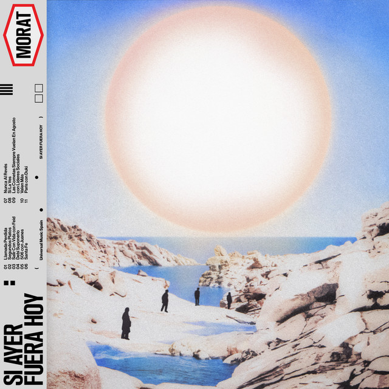

Canciones que me hacen pensar en ti
Hay canciones que dicen cosas que a veces uno no sabe cómo decir. Y estas son algunas que me hacen acordar de esos ojitos y tus luneres que resaltan en tu carita :)

CALL MY MAYBE
DUKI

ROMANTICOS DE LUNES
FEID

NUEVA YORK
BLESSD

506
MORAT Y JUANES

eCLIPSE sOLAR
DUKI
Pasa el mouse por una canción y haz clic para escucharla 🎵
Y así termina esta pequeña aventura, Meli. Quería que fuera algo único y diferente, espero que lo hayas disfrutado tanto como yo. No sé qué más agregar, tal vez solo... U.V.E.S.